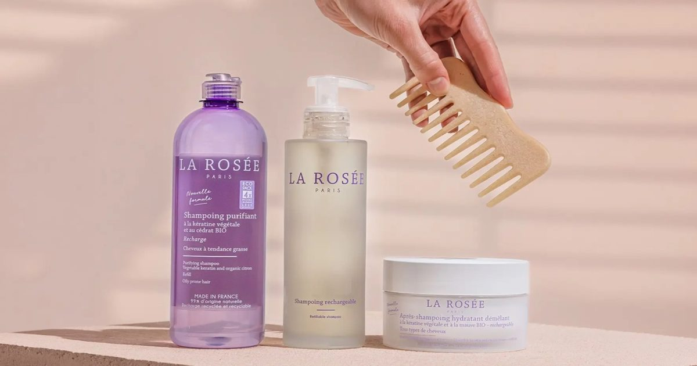

Французский бренд средств по уходу за кожей La Rosée расширяет свою аптечную сеть
Основанная в 2015 году двумя фармацевтами, La Rosée за последнее десятилетие зарекомендовала себя как ведущий дермокосметический бренд в аптечном канале.
Доступный в более чем 11 000 аптек, бренд продолжает расширяться во Франции и на международном уровне, опираясь на свой отличительный подход, сочетающий натуральные ингредиенты, эко-дизайн и фармацевтический опыт.
С самого начала основатели Колин Бертран и Махо де Гиберт решили